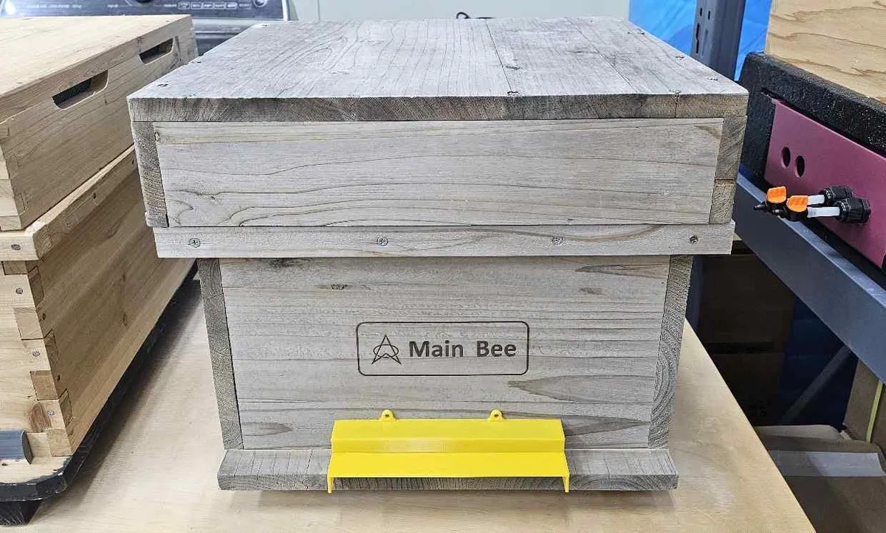
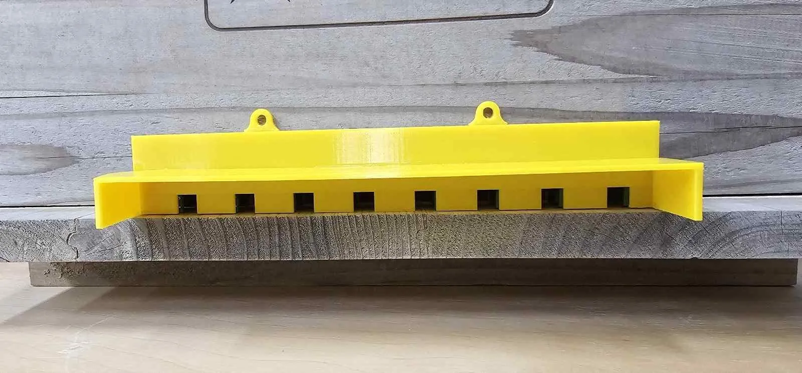
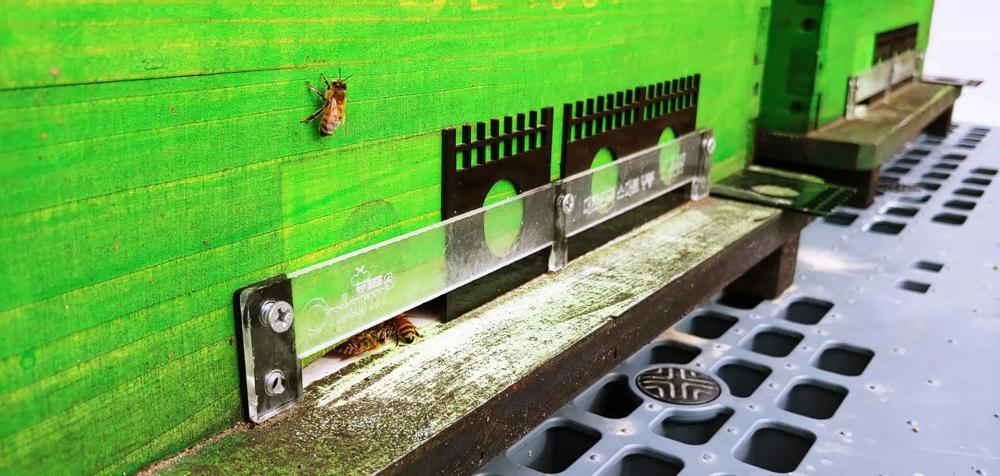

돌아오지 않는 꿀벌, 휴대폰으로 경고…비온팜 활동량 측정기
출입구 드나드는 벌 세는 장치…말벌방제용 소문과 2025년 개발·실증 중이던 장비까지

스마트 양봉 기업 온팜(브랜드 비온팜)은 2025년 4월 홈페이지에 올린 소개서에서 소문(벌통 출입구)을 드나드는 꿀벌을 세는 ‘꿀벌 활동량 측정기’를 소개했다. 비온팜은 일정량 이상의 꿀벌이 벌통으로 돌아오지 않으면 휴대폰으로 경고해 손실을 미리 막는다고 했다.
출입 횟수 세는 측정기
소개서의 제품 구성표에서 활동량 측정기의 사양은 ‘활동량 분석’과 ‘소문입출입 계수’다. 출입구를 드나드는 벌의 수를 센다는 뜻이다. 같은 표에서 이 측정기는 ‘판매 중’으로 분류됐다.
소개서는 측정기를 꿀벌 출입이나 사봉(죽은 벌) 처리가 쉬운 크기로 바꿔 농가 작업이 편해졌다고 적었다. 모바일로 확인하고 알람을 받을 수 있어 이상 징후 기준을 정해 두면 일정량 이상 돌아오지 않을 때 경고한다고 덧붙였다. 소개서에는 서양 꿀벌을 치는 양봉용 벌통과 토종벌을 치는 한봉용 벌통에 측정기를 단 사진이 함께 실렸다.

사진: 비온팜이 2025년 소개서에 실은 꿀벌 활동량 측정기 (자료: 비온팜)비온팜 홈페이지 제품 소개란은 벌통 밖으로 출입하는 횟수를 재서 봉군(꿀벌 무리)의 상태를 확인한다고 설명했다. 내부 활동량도 재서 증소(벌집틀인 소비를 더 넣어 주는 일) 시점을 예상할 수 있다고 했다. 꿀 1kg을 생산하는 데 드는 꿀벌 활동량을 확인하고 더 많이 생산하는 데 필요한 꿀벌 수도 예상할 수 있다고 덧붙였다. 소개서 첫머리의 주요 기능 목록에도 ‘꿀벌 외부 및 내부 활동량 측정’이 증소와 실종 원인 분석 기능으로 올라 있다.
말벌 피해와 방어용 소문
소개서는 말벌이 꿀벌 수백 마리를 죽일 수 있다고 적었다. 양봉 농가가 이런 피해를 막으려고 봄철에 말벌 여왕벌을 미리 잡거나 말벌이 극성을 부리는 무밀기(꽃꿀이 나지 않는 시기) 여름철에는 아예 벌통 주변을 지킨다는 설명이다.
소개서에 따르면 농가는 말벌 접근을 막으려고 끈끈이나 채집기를 쓰지만 비온팜은 이 방법이 가격이나 효과 면에서 비효율적이라고 봤다. 비온팜이 대안으로 내세운 것이 말벌 방어용 소문이다. 소개서는 이 소문이 “벌들의 자유로운 출입을 관리하는 동시에 말벌을 방어할 수 있어 효과적인 대응이 가능함”이라고 적었다. 소개서에는 비온팜의 2020년 말벌방제용 소문 사진이 농가 제작품, 시중 판매 제품 사진과 나란히 실렸다.

사진: 비온팜이 2025년 소개서에 ‘2020년 말벌방제용 소문’으로 실은 장치 (자료: 비온팜)2025년 실증·개발 장비
비온팜은 홈페이지에 실은 ‘2023 비온팜 주요 계획’에서 꿀벌의 내외부 활동량을 측정해 증소 시점과 말벌 출현을 경고하겠다고 밝혔다. 무왕군(여왕벌이 없는 무리)과 분봉(무리가 나뉘어 일부가 떠나는 일) 시점 알람도 계획에 들었다.
2025년 소개서의 ‘옵션장비(예정포함)’ 목록에는 비슷한 기능을 내건 장비가 올라 있다. 소비 증소를 감지해 알림을 보내는 증소분석기와 봉군 환경 유지·말벌 방제용 자동소문은 ‘실증 진행 중’이며 2025년 하반기 판매 예정이라고 적혔다. 분봉과 무왕군을 감지해 알리는 사운드분석기는 ‘개발 진행 중’이었고 2025년 하반기에 실증할 예정이었다. 이후 실제 판매나 실증이 이뤄졌는지는 확인되지 않았다.
자료: 비온팜 홈페이지(2026년 10월 8일 확인), 비온팜 2025 소개서
저작권자 © 윙윙통신 무단 전재 및 재배포 금지